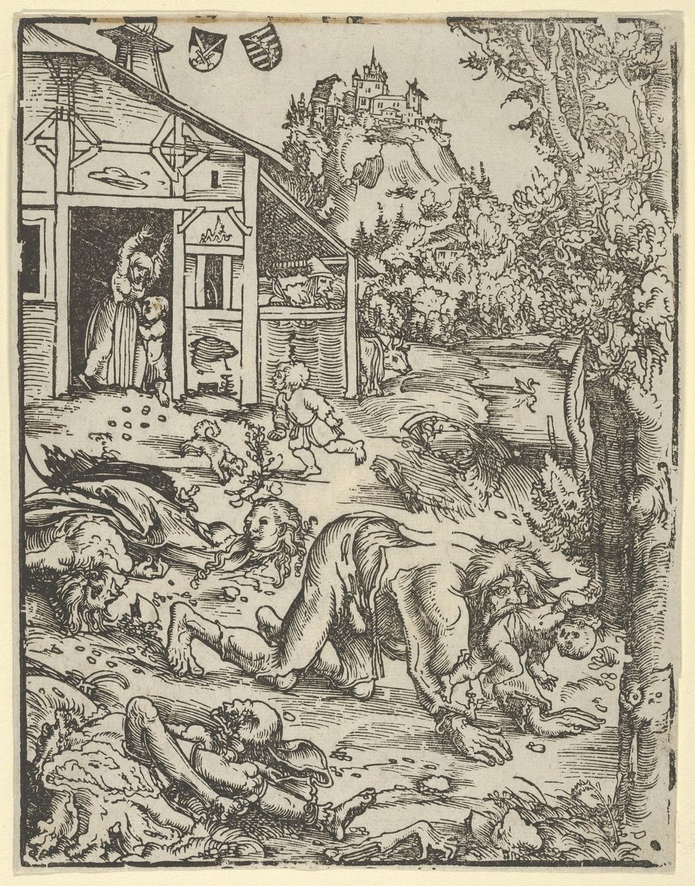

怪異のせいで殺された人たち
狼男とされて処刑された農夫。吸血鬼とされて墓を暴かれた少女。魔女とされて焼かれた女性たち。オカルトの歴史には、話ではなく実際に死んだ人がいる。

この事典の項目の多くは、読んで楽しむものである。ネッシーもビッグフットも、誰も傷つけていない。
だが、そうでないものがある。怪異とされたことで、実在の人間が拷問され、処刑され、墓を暴かれた例である。この特集はそれを扱う。
狼男裁判 — 16世紀フランス
狼男の伝承は古い。だが16世紀から17世紀にかけて、これは裁判の罪状になった。
魔女裁判が広がった時期、ヨーロッパの一部の地域では「狼に変身して人を襲った」という告発が実際の刑事手続きに乗った。フランス、スイス、ドイツで記録が残っている。
処刑された人数の正確な集計はない。だが、フランスのジル・ガルニエ（1573年）のように、名前と判決が記録に残っている事例が複数ある。
告発された人々の多くは、貧しく、村の外れに住み、身寄りのない者だったと指摘されている。精神疾患や、外見の異常を持つ人が標的になった可能性も研究されている。
ニューイングランドの吸血鬼騒動 — 1892年
これは中世の話ではない。19世紀末のアメリカで起きた。
ロードアイランド州エクセター。ブラウン家では、母と長女が相次いで結核で死亡し、続いて19歳の次女マーシー・ブラウンが亡くなった。さらに息子のエドウィンが重い病に倒れた。
村人は、死んだ家族の誰かが墓のなかから生者の生命を吸っていると考えた。1892年3月、3人の遺体が掘り起こされた。
マーシーの遺体は、冬のあいだ地下納骨堂に安置されていたため腐敗が進んでいなかった。これが「まだ生きている証拠」とされた。心臓が取り出され、焼かれ、その灰が水に混ぜられて兄に飲まされた。
エドウィンは2か月後に死亡した。
結核菌が発見されたのは1882年である。マーシー・ブラウンの墓が暴かれたのは、その10年後だった。知識が届くまでには時間がかかる。
マーシー・ブラウンの墓は現在も残っており、吸血鬼伝承をたどる訪問者が絶えない。彼女は結核で死んだ19歳の女性であって、それ以上の何者でもなかった。
いま起きていること
これを過去の話として終わらせることはできない。
21世紀に入ってからも、世界の複数の地域で呪術や妖術の嫌疑をかけられた人が殺害される事件が報告されている。国連や人権団体が繰り返し警告を出している。標的になるのは多くの場合、高齢の女性、障害のある子ども、アルビニズムのある人である。
構造は16世紀と変わっていない。説明のつかない不幸が起き、原因を求める圧力が生じ、共同体のなかで最も弱い立場の者が指名される。
なぜこのサイトにこの項目があるか
オカルトを扱うサイトは、たいてい楽しく書かれている。このサイトもそうである。ネッシーの話は面白いし、ミステリーサークルの種明かしは痛快である。
だが同じ棚に、人が死んだ話がある。狼男と吸血鬼は、ネッシーと同じ「怪物」の棚に並んでいるが、この2つには実在の犠牲者がいる。
このサイトが各項目で「確認されていること」と「語られていること」を分けるという方針を取っているのは、面白さを削るためではない。その区別が失われたときに何が起きたかが、歴史に記録されているからである。
マーシー・ブラウンの墓を暴いた村人たちは、悪人ではなかった。彼らは自分が正しいことをしていると信じていた。そして、家族を救おうとしていた。
関連する項目
出典・参考
- Werewolf witch trials（英語版ウィキペディア）16-17世紀の狼男裁判
- Mercy Brown vampire incident（英語版ウィキペディア）1892年ロードアイランドの事例
- New England vampire panic（英語版ウィキペディア）結核との関連